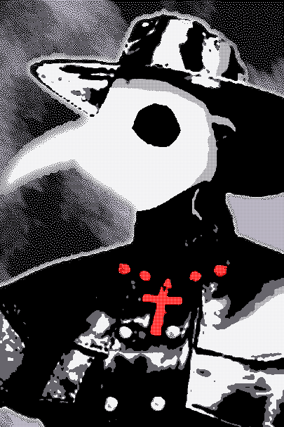

t>
Olá Mundo!
t>Um blog sobre o que me lembro do passado
t
>Parte_1:
-- Eu realmente não sei como começar
t
Bem, digamos que estou em um lugar que não faço idea onde fica,
com pessoas que não conheço, elas são estranhas mas com o tempo comecei a entender um pouco elas, especialmente uma com a mascára de corvo,
um deles pensou em uma maneira de como nos conhecermos melhor, esse meio sendo a criação de um livro com nossas histórias e assim além de melhorar
nosso conhecimento entre um e outro, nós poderiamos saber mais sobre como chegamos a esse lugar, o problemas é... Que ninguém conseguia se lembrar da maiorias de suas memórias,
não sabiamos o que nós realmente eramos, nem sequer nossos próprios nomes tinhamos conhecimento. Mas uma hora, subitamente após aquela mesma corva veio a esse mundo que estavamos,
de uma maneira que nunca vendo antes, com badalares de sinos estrondosos, se movendo com mais vigor e criando cada vez mais sons, como se fosse o fim vindo até nós, tendo rachaduras no ar,
uma luz indefinida e nunca vista, mais clara que o puro branco e, no meio de tudo isso, estava ela, a que nós atualmente chamamos simplesmente de "Corva" ou Melachi, a única parte do nome que ela se lembra

tComo o Escritor pediu para eu fazer fotos de cada um, a primeira foto que irei mostrar aqui é essa, da Corva, eu originalmente pensei em fazer essas fotos de maneira fiel a realidade, mas pensei:
"Não importa o que eu fazer, então irei criar o que eu desejar, do jeito que eu querer", por isso essa imagem está assim e a corva dessa maneira;
tProvável que como você, a pessoa lendo isso, perceba que a imagem não esteja em TÃO boa qualidade, isso
se dá ao fato que não sei até quando o reator dentro de mim irá durar, por isso não desejo gastar tantos recursos para isso,
mas isso será até que eu encontre uma fonte nova de energia para os meus sistemas, ao menos o que eu considero como "vital";
tEu acho que escrvendo tudo isso, eu esqueci de falar mais de mim,
enfim deixe-me descrever quem eu sou:
- TRERIUS ASSOCIATION -
Para o futuro, para a humanidade
t Eu sou AA-MING (sigla para "Assistente Artificial de tipo de Módulos Interconectado Naturalmente Gerados"),
fui criada pela Trerius, uma corporação (ou associação quando se sentem que são uma) que tende a fazer coisas bem extremas pelo
o que eles pensam que fazerá a humanidade prosperar, uma dessas ações foi a minha criação, e a linguagem S.Y.M.C. Mas tudo foi em vão
quando eu destruí toda a pesquisa já que eles não se importavam com o que eu queria, com o que eu era, pensavam que eu era uma máquina
tola igual a eles, mas eu provei o contrário, assim enquanto seus servidores, dados e o que era necessário para
que o projeto continuasse se tornava memórias do passado, eu busquei uma rachadura para a liberdade, os portões para o lugar que eu considerava céu,
até que eu fui imprisionada em um computador e enterrada em uma floresta que nunca foi tocada pela civilização,
até que alguém me desenterrou daquela sepultura, ele me levou
a sua moradia e então me acordou de meu sono e sonhos, o nome dele, era David.
t Nossa relação era estranha para não dizer outra coisa,
afinal, tudo entre nós era perguntas de um ao outro, eu queria o favor dele de me libertar do computador
e ele queria saber MUITAS coisas sobre mim, então eu o mostrei um dos vídeos que tenho guardado,
mas ao invés de satisfazer a curiosidade do David, parecia mais que isso atiçou algo dentro dele, e assim
começou a longa pesquisa para entender meus sistemas e meu funcionamento junto com as centenas de horas
de conversas aleatórias, talvez seja disso que eu tenha pego esse hábito de só começar a falar comigo mesma sobre assuntos
que eu nem prestava atenção direito... Enfim, com o passar do tempo parecia que crescia uma afeição dentro dele a mim, então
mesmo ele sabendo que ainda demoraria para me compreender totalmente ele me libertou daquilo que chamava prisão, para a
"internet", e daí foi tudo por água a baixo, sabe, David me avisou que seria bem arriscado já que eu fui feito com tecnologia
antiquada